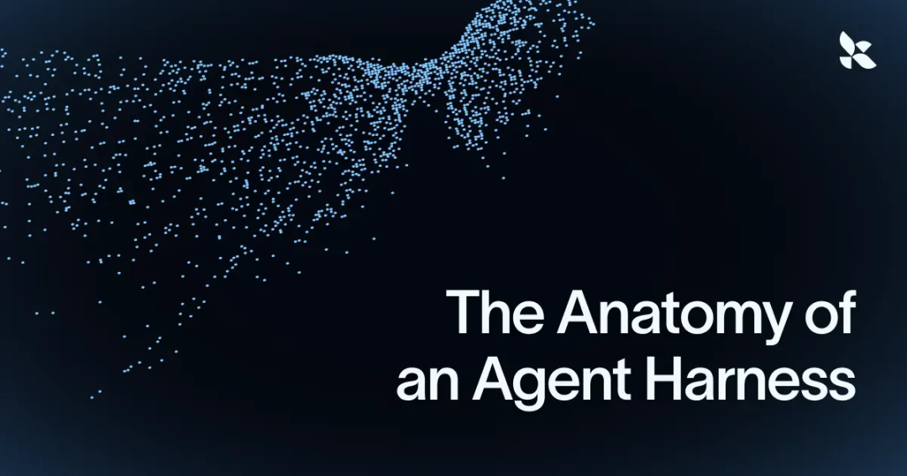
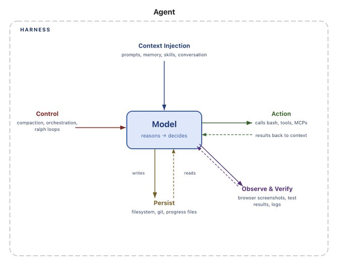
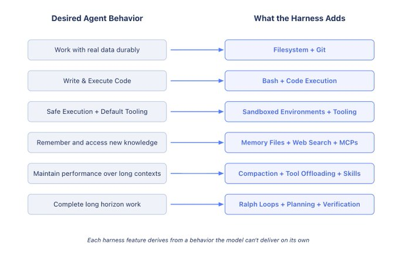
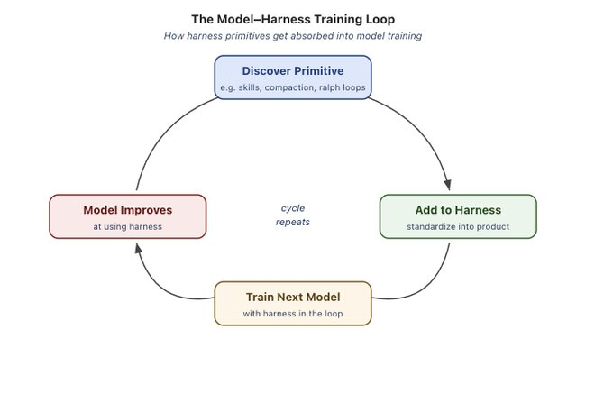

真正把模型变成智能体的，不是提示词魔法，而是模型之外那一整套状态、工具、环境、反馈回路与约束系统。 -- Vivek Trivedy（LangChain）

01
导语
LangChain 这篇《The Anatomy of an Agent Harness》试图回答一个越来越关键、但行业里经常被说得很模糊的问题：
到底什么是 Harness？
作者给出的定义非常直接：
Agent = Model + Harness
在这个等式里，如果你不在模型这边，那你大概率就在 Harness 这一侧。
这篇文章最有价值的地方，不是又发明了一个新术语，而是把“模型之外的系统工程”第一次讲得这么完整：文件系统、Bash、沙箱、记忆、搜索、上下文压缩、长链路执行、Ralph Loop、验证回路……这些原本零散的工程部件，被统一放进了一个更清楚的框架里。

02
谁能来定义 Harness？
作者先给了一个非常利落的定义：
Harness 是一切不属于模型本身，但又让模型变得有用的代码、配置与执行逻辑。
一个裸模型不是 Agent。
只有当你给它接上这些东西，它才开始像一个真正能工作的系统：
持久状态
工具执行
反馈回路
可强制执行的约束
具体来说，Harness 往往包括：
System Prompts
Tools、Skills、MCP 及其说明
打包好的基础设施（文件系统、沙箱、浏览器）
编排逻辑（如子 Agent 派生、任务交接、模型路由）
用于保证执行确定性的 Hooks / 中间件（如上下文压缩、持续执行、Lint 检查）
作者也承认，Model 和 Harness 的边界其实有很多种切法。
但他认为这个定义最干净，因为它迫使我们把注意力从“模型有多聪明”转到“我们如何围绕模型设计系统”。
这也是这篇文章最值得技术团队借鉴的地方：别把一切希望都压在模型升级上。
03
为什么模型天然需要 Harness
文章接着从模型能力边界出发，反向解释为什么 Harness 必不可少。
模型本身大体上做的事情很简单：
输入：文本、图片、音频、视频等数据
输出：文本
就这么多。
它默认并不能：
在多轮交互之间维护持久状态
执行代码
获取实时知识
自动搭环境、装依赖并完成工作
这些全部都属于 Harness 级能力。
也就是说，只靠模型权重，Agent 永远到不了“真正干活”的那一步。
举个最常见的例子：
我们现在熟悉的聊天体验，其实本身就是一种 Harness。它通过 while loop 循环把历史消息持续追加进去，才形成“连续对话”的用户体验。
所以文章的核心方法其实非常清晰：
想要某种 Agent 行为，就把这种行为翻译成 Harness 里的一个具体特性。
04
从“想要的行为”反推 Harness 设计
作者把 Harness Engineering 定义成一种工程方法：
用人类先验去注入、引导并修正 Agent 行为。
随着模型能力增强，Harness 不只是补短板，更开始变成一种“外科式扩展”——通过精确设计，让模型完成原本做不到的任务。
文章没有穷举所有 Harness 功能，而是从“我们希望 Agent 具备什么行为”反推：
想要的行为（或想修复的问题） → 对应的 Harness 设计。
这也是全文最值得记住的方法论。

05
文件系统：持久存储与上下文管理的第一性原语
我们希望 Agent 拥有持久存储，能接触真实数据，把塞不进上下文窗口的信息卸载出去，并且在多轮会话间保留工作结果。
模型只能直接操作当前上下文窗口里的知识。
在文件系统成为标准能力之前，用户往往只能把内容复制粘贴给模型。这种体验既笨重，也不适合自主 Agent。
而现实世界里，人类早就靠文件系统协作。模型在训练时也已经见过海量与文件系统交互的文本模式。因此最自然的解法就是：
Harness 提供文件系统抽象和文件系统操作工具。
作者认为，文件系统可能是最基础的 Harness 原语，因为它解锁了太多能力：
Agent 拥有一个工作区，可以读取数据、代码和文档
工作任务可以渐进地写入和卸载，而不用把一切都塞进上下文
Agent 可以保存中间结果，状态不再只活在单轮会话里
文件系统还是天然的协作面，多 Agent 和人类都能在共享文件上协同
在这之上，Git 进一步给文件系统加上版本控制：
追踪工作
回滚错误
实验分支
作者后面还会不断回到文件系统，因为它不只是一个存储介质，而是其他很多 Harness 特性的支点。
06
Bash + Code：让 Agent 拥有通用工具，而不是等人类预埋一切
我们希望 Agent 能自主解决问题，而不是每做一件事都要人类先为它设计一个专用工具。
文章提到，当下主流的 Agent 执行模式是 ReAct Loop：
模型先推理
再调用工具执行动作
观察结果
重复这个循环
问题在于：Harness 只能执行自己已经接好的工具。
如果你什么都要预先设计，Agent 的上限就会被工具数量卡死。
所以更好的方式，是给它一个足够通用的工具：Bash。
作者的判断很明确：
Harness 应该内置 Bash，让模型通过“写代码 + 执行代码”来自主解决问题。
这是一个很大的跃迁。
因为这意味着，模型不再局限于一组固定工具，而是可以根据眼前的问题，临时用代码给自己“造工具”。
当然，Harness 仍然会带其他工具。
但在自主问题求解这件事上，代码执行已经变成默认的通用策略。
07
沙箱与执行环境：Agent 不只是要能动手，还要能安全动手
我们希望 Agent 在正确的默认环境里安全执行、观察结果并持续推进工作。
有了存储和代码执行能力之后，下一个问题就来了：
这些动作到底发生在哪里？
如果直接在本地运行 Agent 生成的代码，风险显然很高。另外，单一本地环境也无法支撑更大规模的 Agent 工作负载。
因此，文章把Sandbox沙箱提到了非常高的位置。
沙箱能提供：
安全的隔离执行环境
文件检查能力
依赖安装能力
任务完成所需的运行空间
进一步还可以：
命令执行白名单
执行网络隔离
动态创建环境、并行扩展任务、任务结束后销毁环境
好的环境不仅安全，还要带着合适的默认工具：
语言运行时
常用包
git / test CLI
浏览器
日志、截图、测试运行器
作者特别强调，浏览器、日志、截图和测试运行器，本质上都是 Agent 的“观察器官”。
有了这些观察器官，Agent 才能真正进入自验证循环：
写代码
跑测试
看日志
修错误
这些都不是模型天然会拥有的能力，而是 Harness 级别的设计决策。
08
Memory 与 Search：让 Agent 不只会当场回答，还能持续学习
我们希望 Agent 能记住自己见过的东西，也能访问训练数据之外的新信息。
模型除了自身权重和当前上下文外，没有额外知识。
如果你不能直接改模型权重，那么“给模型加知识”的唯一现实手段，就是上下文注入。
这里文件系统再次成为关键原语。
文章提到，Harness 会支持像AGENTS.md这样的记忆文件标准，并在 Agent 启动时把它自动注入上下文。
随着 Agent 自己持续更新这个文件，Harness 再把最新版本重新注入后续会话。
这其实是一种很实用的“持续学习”：
前一轮会话产生的知识被持久保存
后一轮会话再把它召回
同样地，模型知识截止意味着它无法天然获取训练停止之后的新数据，比如新版本库、最新 API 变化、实时世界状态。
因此，Harness 里应该内置：
Web Search
像 Context7 这样的 MCP 工具
让 Agent 可以跨越知识截止时间，拿到最新上下文。
作者的结论是：
Web Search 与实时上下文查询工具，是值得直接内建至 Harness 的基础原语。
09
对抗 Context Rot：不要让 Agent 越干越糊涂
我们希望 Agent 在长时间工作过程中，性能不要随着上下文不断膨胀而持续下降。
文章引用了一个非常重要的概念：Context Rot。
简单说，就是当上下文窗口越来越满时，模型的推理质量和任务完成能力会逐步退化。
上下文本身是一种稀缺资源，所以 Harness 的一个核心职责，就是做上下文工程。
作者认为，今天很多 Harness，本质上就是“把上下文工程工程化”的交付系统。
文中点了三个关键机制：
1. 上下文压缩（Compaction）
当上下文快满了怎么办？
如果什么都不做，API 直接报错，这显然不是一个可接受的系统行为。
所以 Harness 会用上下文压缩：
对已有上下文做智能卸载
做摘要压缩
让 Agent 可以继续工作
2. 工具调用卸载（Tool Call Offloading）
很多工具输出极长，但对模型当下推理未必有价值。
Harness 会：
保留头尾 Token
把完整输出卸载到文件系统
让模型在必要时再回去查看
这样可以避免工具输出把上下文窗口挤满。
3. Skills / 渐进披露（Progressive Disclosure）
如果一开始就把太多工具和 MCP 服务器加载进上下文，Agent 在真正开始工作前就已经被噪声拖慢。
Skills 作为一种 Harness 原语，通过“渐进披露”减少启动时的上下文负担。
重点不是模型主动要求这样做，而是 Harness 替模型做了上下文保护。
作者的核心判断很明确：
好的 Harness，不只是给模型更多上下文，而是主动防止上下文腐烂。
10
长链路自主执行：Agent 真正的圣杯
我们希望 Agent 能在长时间范围内，自主、正确地完成复杂工作。
在代码场景下，这几乎就是今天整个行业的圣杯：
自主软件创建。
但现实是，当前模型在长时间任务上仍然存在很多问题：
过早停止
难以拆解复杂问题
当任务跨越多个上下文窗口时逐渐失去一致性
所以 Harness 必须围绕这些缺陷来设计。
这里，前面所有原语开始叠加产生复利。
文件系统 + Git：跨会话的工作账本
长任务会产生成百万 Token。
如果没有文件系统，所有进度都只能活在上下文里；一旦换窗口，很多东西就丢了。
而文件系统可以持久记录工作进展，Git 则让新的 Agent 快速理解项目历史和当前状态。
对多 Agent 协作而言，文件系统甚至成了“共享账本”。
Ralph Loop：让 Agent 延续执行，而不是过早收工
作者提到一个模式：Ralph Loop。
它的思路是：
当模型试图退出时
用 Hooks（钩子机制）拦截它的退出动作
在一个更干净的新上下文窗口里重新注入原始任务
强制 Agent 延续执行，直到完成目标
这件事之所以可行，正是因为文件系统保存了上轮迭代留下的状态。这里的核心，就是把原本会中断的任务改造成可持续推进的“延续执行”流程。
规划与自验证（Planning + Self Verification）
长链路任务还需要两件事：
规划
自验证
Harness 可以通过提示和文件系统里的计划文件，引导模型把大目标拆成多个步骤。
每完成一步，再通过：
自动测试
Hooks 返回错误信息
模型自评代码
来形成校验闭环。
这样验证不再只是“最后验收”，而是每个迭代步骤中的反馈信号。
作者的结论是：
真正的长链路 Agent，不是靠一次生成成功，而是靠状态、规划、验证和持续迭代把任务磨出来。
11
Harness 的未来：它会被模型吸收掉吗？
文章最后进入一个更有意思的问题：
随着模型越来越强，Harness 今天承担的一些能力，会不会逐渐被模型原生吸收？
比如：
规划能力
自我验证能力
长时一致性
理论上，模型变强之后，对上下文注入的依赖会下降。
这似乎暗示 Harness 的重要性会随时间降低。
但作者并不这么看。
他认为，这件事更像 Prompt Engineering：
即使模型越来越强，围绕模型设计优秀系统仍然有持续价值。
因为 Harness 不只是“补模型短板”，它还在做另一件事：
围绕模型智能去工程化地放大其效能。
一个配置合理的环境、正确的工具、持久状态与验证回路，对任何模型都有增益，无论基础智能有多高。
12
模型训练与 Harness 设计的耦合
作者还提出了一个很现实、也很容易被忽略的问题：
今天像 Claude Code、Codex 这样的产品，本身已经是在“Model + Harness”联动条件下做后训练了。
这会形成一个反馈回路：
某些有用的 Harness 原语被发现
被加入产品环境
又被下一代模型在训练中学会
久而久之，模型会在自己熟悉的 Harness 里表现越来越好。
但这也带来了副作用：过拟合。
文章举了一个 Codex 的例子：
某些文件修改逻辑一旦换一种 patch 方法，模型性能就会明显下降。
这说明模型学到的，不只是通用能力，也包括对特定 Harness 结构的依赖。
作者因此提醒：
最适合你任务的 Harness，不一定就是模型后训练时熟悉的那一套。
他甚至提到，自己曾经只通过优化 Harness，就把编码 Agent 在 Terminal Bench 2.0 上的表现从 Top 30 拉到 Top 5。
这句话的潜台词非常重：
Harness 还有很大的优化空间，甚至足以决定同一个模型的真实上限。

13
LangChain 正在探索的几个前沿问题
文章最后列出了他们正在研究的方向：
如何编排数百个 Agent 在共享代码库上并行协作
如何让 Agent 自己分析自身 trace，识别并修复 Harness 级故障模式
如何让 Harness 针对具体任务 just-in-time 动态装配合适的工具与上下文，而不是预配置一大坨
这其实指向一个更高阶的未来：
Harness 本身也会越来越智能。
它不只是静态环境，而会逐渐演化成一层会自适应、会调度、会修正的系统外壳。
14
结语
这篇文章最值得记住的一句话，是它反复强调的那个关系式：
Agent = Model + Harness
模型负责提供智能。
Harness 负责把这种智能变成真正有用的系统能力。
如果只盯着模型参数、排行榜和推理成本，你会误以为 Agent 竞争只是模型竞争。
但这篇文章提醒我们：
真正让模型进入生产、持续执行、长期可维护的，恰恰是模型之外那整套系统工程。
也就是说，未来最有价值的 Agent 团队，未必只是拥有最强模型的团队，而更可能是最会做 Harness 的团队。
参考阅读
The Anatomy of an Agent Harness — LangChain Blog
https://blog.langchain.com/the-anatomy-of-an-agent-harness/
OpenAI Responses API with a computer environment — OpenAI
https://openai.com/index/equip-responses-api-computer-environment
Designing AI agents to resist prompt injection — OpenAI
https://openai.com/index/designing-agents-to-resist-prompt-injection